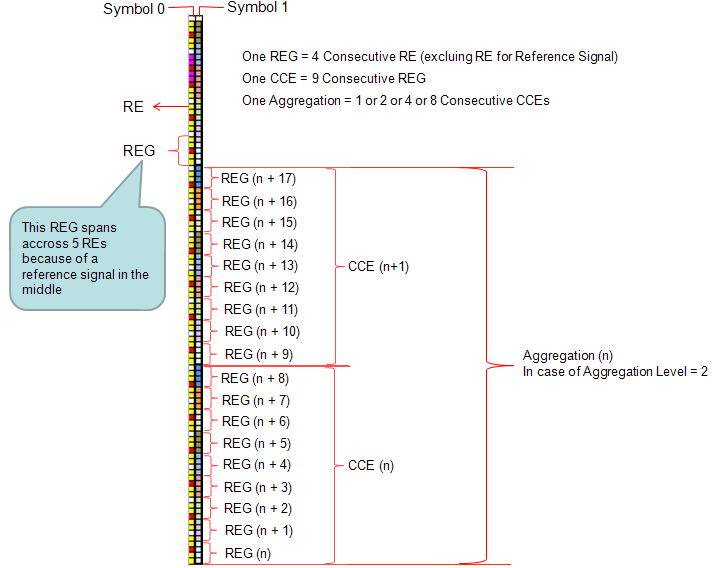

|
LTE Quick Reference Go Back To Index Home : www.sharetechnote.com |
|
|
Resource Allocation and Management Unit
Reading various LTE specification, you will see many terms which seems to be related to resource allocation but looks very confusing. At least you have to clearly understand the following units. i) Resource Element(RE) : The smallest unit made up of 1 symbol x 1 subcarrier. ii) Resource Element Group (REG) : a group of 4 consecutive resource elements. (resource elements for reference signal is not included in REG) iii) Control Channel Element (CCE) : a group of 9 consective REG iv) Aggregation Level - a group of 'L' CCEs. (L can be 1,2,4,8) v) RB (Resource Block) : I think everybody would know what this is. This is a unit of 72 resource elements which is 12 subcarrier by 6 symbols. vi) RBG (Resource Block Group) : This is a unit comprised of multiple RBs. How many RBs within one RBG differs depending on the system bandwidth. (Refer to RB Size allocation for each System Bandwidth for the details)
We use these units in hierachical manner depending on whether it is for control channel or data channel.

For PDCCH, the hierachy would be : RE --> REG --> CCE --> Aggregation Level ==> I think a couple of example would give you more practical understanding.
Example 1 > a PDCCH transmission
i) The CCE index for a certain subframe = 4 ii) Aggregation Level is 2 iii) The subframe is sending DCI1 only
Resource Allocation : Network would allocate the DCI 1 spreaded over CCE4, CCE5.
Example 2 > a PDCCH transmission
i) The CCE index for a certain subframe = 4 ii) Aggregation Level is 2 iii) The subframe is sending DCI1, DCI 0
Resource Allocation : Network would allocate the DCI 1 spreaded over CCE4, CCE5 and allocate the DCI 0 spreaded over CCE6, CCE7.
Example 3 > a PDCCH transmission
i) The CCE index for a certain subframe = 4 ii) Aggregation Level is 2 iii) The subframe is sending DCI1, DCI 0 and DCI 3 (power control)
Resource Allocation : Network would allocate the DCI 1 spreaded over CCE4, CCE5 and allocate the DCI 0 spreaded over CCE6, CCE7 and allocate two CCE for DCI 3 but DCI 3 would be allocated to a common search space (not to a user specific search space).
For PDSCH, the heirachy would be RE --> RB --> RBG ==> This is pretty long story. Please refer to Resource Allocation Type
|